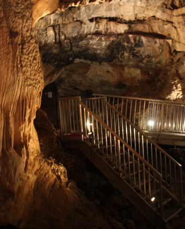
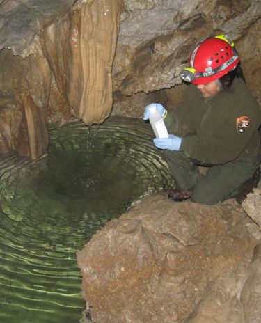

Hansen Cave
Discovered in 1887, early visitors climbed “tree ladders” before exploring the dark cave by candlelight. They would climb, crawl and scramble through the passages to reach Hansen Cave Lake deep in the mountain.

Hansen Cave
Hansen Cave Lake is an underground body of water that raises to nearly 15 feet in the spring, then slowly drops to 2-3 feet in the late fall. Visitors on the Introduction to Caving Tour travel the cave passages to experience the dark, quiet lake in the back of Hansen Cave.